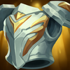

Peleador
/
Tanque
Dificultad Baja
HABILIDADES


PASIVA • PERSEVERANCIA
Si Garen no ha recibido ataques de ningún tipo recientemente, se regenerará un porcentaje de su vida máxima cada segundo.
1 • GOLPE DECISIVO
Garen obtiene una ráfaga de velocidad de movimiento y se libera de todas las ralentizaciones que lo están afectando. Su siguiente ataque impactará un área vital de su enemigo, le infligirá daño adicional y lo silenciará.
2 • CORAJE
Garen reduce el daño recibido durante un breve momento y obtiene resistencia adicional contra el control de masas.
3 • JUICIO
Garen gira rápidamente su espada alrededor de él, lo que inflige daño físico a los enemigos cercanos. Los enemigos alcanzados con el filo de su espada reciben golpes críticos.
DEFINITIVA • JUSTICIA DEMACIANA
Garen invoca todo el poder de Demacia para intentar ejecutar a un campeón enemigo, lo que inflige daño en una zona alrededor de su enemigo.
CONFIGURACIÓN
OBJETOS
-

Égida de Fuego Solar
3000+500 Vida Máxima
+15 Aceleración de Habilidad
INMOLAR: Inflige 16-25 de daño mágico + un 0.8% de Vida adicional por segundo a enemigos cercanos. Dañar campeones o monstruos épicos con Inmolar aumenta su daño en un 8% por 5 seg. Se acumula hasta 6 veces.
TOQUE LLAMEANTE: Al tener el máximo de acumulación de Inmolar, los ataques queman a los enemigos cercanos con el daño de Inmolar durante 3 seg.
Inmolar inflige 125% de daño a súbditos y montruos. -

Placa del Hombre Muerto
2800+250 Vida Máxima
+50 Armadura
IMPLACABLE: +5% de Velocidad de Movimiento.
IMPULSO: Moverte genera impulso, lo que otorga hasta 50 de Velocidad de Movimiento al llegar a 100 acumulaciones. Atacar elimina todas las acumulaciones de Impulso. Las acumulaciones decaen cuando se afecta la velocidad de movimiento.
GOLPE APLASTANTE: Los ataques infligen hasta 100 de daño mágico adicional según el Impulso consumido. Los ataques cuerpo a cuerpo con el máx. de Impulso ralentizan un 50% durante 1 seg. -

Fuerza de la Naturaleza
2850+350 Vida Máxima
+45 Resistencia Mágica
TORMENTA: +5% de Velocidad de Movimiento.
ABSORBER: Recibir daño de habilidades otorga 6 de Velocidad de Movimiento y 6 de Resistencia Mágica durante 5 seg (se acumula hasta 5 veces por un máximo de 30 de Velocidad de Movmiento y 30 de Resistencia Mágica).
Cada habilidad única otorga 1 acumulación. -

Ángel Guardián
3100+40 Daño de Ataque
+40 Armadura
RESUCITAR: Tras recibir daño letal, te restaura un 50% de la Vida básica y un 30% de Maná tras 4 seg de estasis. (210 seg de enfriamiento).
-

Guantelete de Sterak
3200+400 Vida Máxima
SEVERO: +50% de Daño de Ataque básico. Solo aplica para campeones cuerpo a cuerpo.
SALVAVIDAS: El daño que te deje con menos del 35% de Vida te otorga un escudo igual al 75% de Vida adicional que dacae a lo largo de 3 seg (90 seg de Enfriamiento).
FURIA DE STERAK: Activar Salvavidas aumenta tu tamaño y te otorga un 30% de Tenacidad durante 8 seg. -

Botas de Mercurio
1000CALZADO: +40 de Velocidad de Movimiento.
MEJORADO: +10 de Resistencia Mágica.
TENACIDAD: Reduce la duración de aturdimientos, ralentizaciones, provocaciones, miedo, silencio, ceguera e inmovilizaciones un 35%.
CARRERA (ACTIVA): Aumenta la Velocidad de Movimiento un 15% durante 3 seg. Infligir o recibir daño de campeones desactiva los efectos de Carrera. (60 seg de enfriamiento). -

Encantamiento de Gárgola
500ARMADURA PÉTREA (ACTIVA): Aumenta tu Vida un 65% y reduce el daño que infliges un 60% durante 4 seg. Si hay 3 o más héroes enemigos cerca, aumenta tu Vida en un 130%. (45 seg de enfriamiento).
RUNAS Y HECHIZOS
-

Agarre del Perpetuo
Cada 4 seg en combate, tu siguiente ataque contra un campeón se potenciará según tu vida máxima.
CURACIÓN: 2% de tu Vida Máxima
Aumenta tu Vida permanentemente en 5
DAÑO ADICIONAL: 3% de tu Vida Máxima como daño mágico
Los efectos se reducen en un 40% para campeones a distancia. -

Brutalidad
Obtienes 7 de Daño de Ataque y un 2% de Penetración de Armadura o 14 de Poder de Habilidad y un 2% de Penetración de Magia (adaptable).
-

Coraza Ósea
Después de recibir daño de un campeón, las siguientes 3 habilidades o ataques de un campeón contra ti dentro de 1.5 seg infligen de 30 a 60 (basado en nivel) menos daño (45 seg de Enfriamiento).
-

Dulces Frutos
Aumenta la curación de Frutamiel en un 25%. Cada vez que tú o un aliado cercano coma una Frutamiel, obtienes 20 de oro.
-

Ignición
ENFRIAMIENTO: 90 seg.
Prende fuego al campeón enemigo objetivo, lo que inflige 60 de daño verdadero (60-410 basado en nivel) durante 5 seg y le aplica un 60% de Heridas Graves mientras dure el efecto. -

Destello
ENFRIAMIENTO: 150 seg.
Te teletransportas una distancia corta hacia delante o hacia la dirección objetivo.
CÓMO JUGAR GAREN
Garen es un campeón de AD tanky y de alto daño. Es capaz de abrirse camino entre multitudes de enemigos para matar a los más peligrosos del equipo enemigo. La razón principal de esto es Coraje (segunda habilidad) que reduce el daño recibido por un corto tiempo y gana resistencia adicional al control de la corona. Está bien al principio del juego, pero cuanto más tarde el juego, más tanque se vuelve Garen, lo que significa que podrá correr y matar al equipo enemigo.